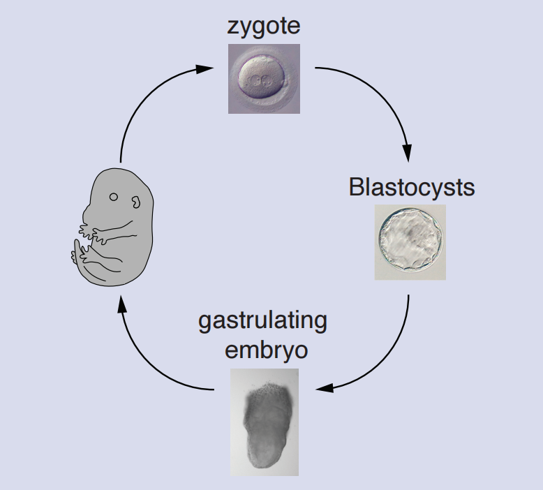
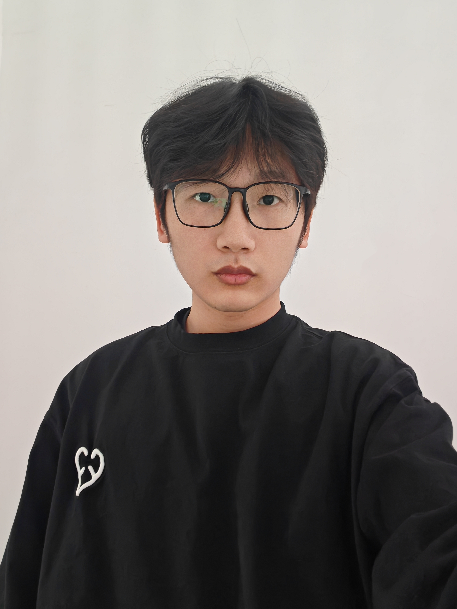
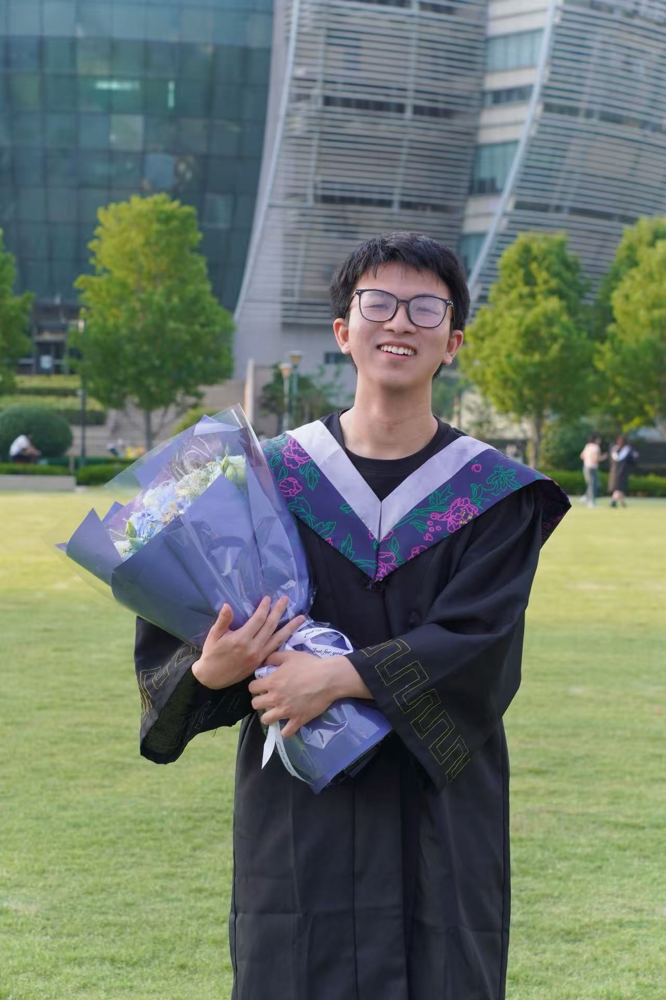
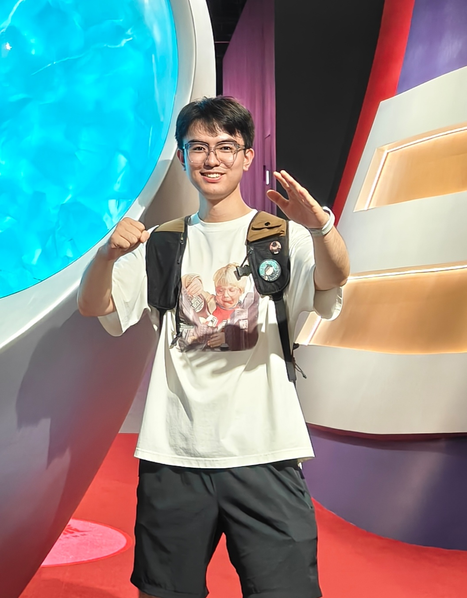

Single-Cell Embryo Atlas
Metacell projection for time-resolved gastrulation states.
Cheng Lab · Westlake University
Decoding the epigenetic mechanisms that orchestrate cell fate decisions during gastrulation
Mapping cell fate decisions during gastrulation at single-cell resolution with time-resolved metacell projections
Decoding how chromatin accessibility and histone modifications control gene expression during lineage commitment
Developing tools for metacell projection and multi-omics integration to resolve developmental trajectories
Metacell projection for time-resolved gastrulation states.

Cellular differentiation transforms a single-cell zygote into a complex multi-cellular organism composed of various tissue and cell types. It's fascinating to understand how this is achieved despite genetic homogeneity.
The overarching goal of the lab is to unravel the principle of epigenetic regulation in cell fate decisions. We employ embryogenesis, gametogenesis, in vitro models and synthesize experimental and computational frameworks to precisely resolve phenotypes and gene functions, effectively disentangling cell-intrinsic and non-cell-autonomous effects over time.


We investigate how chromatin accessibility and histone modifications change dynamically during gastrulation, using single-cell multi-omics to capture the temporal landscape of epigenetic reprogramming as cells transition through key developmental checkpoints.
We study how specific epigenetic regulators — including TET proteins and histone variants — influence lineage commitment during gastrulation, combining genetic perturbation with single-embryo, single-cell resolution approaches.
We develop computational and experimental frameworks to reconstruct gene regulatory networks that drive cell fate decisions, integrating transcriptomic and chromatin data to identify key transcription factors and their downstream targets.
Assistant Professor
Principal Investigator, Westlake University
Postdoctoral Fellow, Weizmann Institute of Science
Ph.D degree, Huazhong Agricultural University
PhD student (2024-)
Bachelor degree, Shenzhen University
PhD student (2024-)
Master degree, Xiamen University
Bachelor degree, Zhejiang Chinese Medical University

PhD student (2025-)
Bachelor degree, Zhejiang Normal University

PhD student (2025-)
Bachelor degree, Soochow University

PhD student (2025-)
Bachelor degree, Soochow University
Research Assistant (2025-)
Bachelor degree, South China Agricultural University

Postdoctoral Fellow (2024-)
PhD degree, Xiamen University
Bachelor degree, Soochow University
Visiting student (2025-)

Research Assistant (2025-)
Master degree, Sichuan Agricultural University
Bachelor degree, Sichuan University of Traditional Chinese Medicine
We are looking for motivated postdoctoral fellows with strong background in developmental biology, epigenetics, single-cell genomics, computational biology or related fields. Candidates with experience in mouse embryology and gene editing are highly preferred. Please send your CV, research interests and contact information of three references to me.
If you are interested in epigenetics and embryo development, please have a try in our lab!
If you are interested in joining us, please email me!